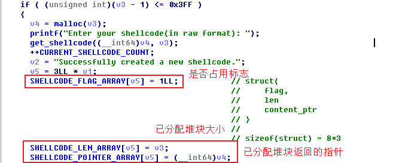
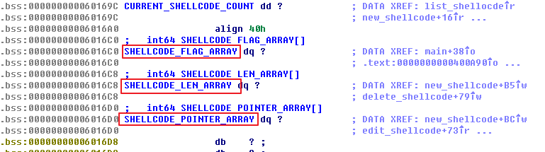
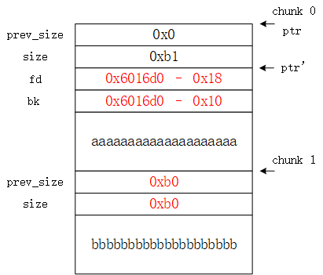

堆溢出原理
相比栈溢出而言，堆溢出的原理类似，但是堆溢出的利用则更复杂，因为glibc堆管理机制比较复杂。
堆溢出的利用主要围绕在bin中free chunk的合并过程，在两个free chunk的合并过程中，有两次改写地址的机会。例如，对于将要合并的chunk P，在合并发生时，glibc将chunk P从binlist中unlink掉，其中涉及到以下指针操作：
1 | FD = P -> fd; // FD为相对于P下一个chunk的地址 |
注意上面的最后两行等号，实际是两次改写地址。如果P是攻击者精心伪造的chunk，那么在unlink P时，可改写FD+12或BK+8(32 bits)为攻击者指定的地址。例如，攻击者可以结合程序的具体情况，使P具备被unlink的条件(主要是设置prev_size和size)，并且有
1 | FD = free@got -12 |
这样在unlink发生时，FD->bk = free@got-12+12 = free@got，其内容将被shellcode地址改写。程序在下一次执行free时，实际将执行shellcode。这就是堆溢出的基本原理。
在新版本的glibc中，在unlink p时还增加了一些安全检查机制，如下
1 | if (__builtin_expect (FD->bk != P || BK->fd != P, 0)) |
它会检查下一个chunk的bk和上一个chunk的fd是否均为P。因此上面的利用方法已经不可行了，因为FD->bk变成了free@got，而BK->fd变成了shellcode的地址+8。
为了绕过检查，需要找一个内存可控的已知地址ptr(设*ptr = pControllable，pControllable开始的内存可控)，以32位系统为例，伪造
1 | P->fd = ptr - 12 |
则有FD->bk = BK->fd。此时，当unlink P发生时，ptr这个地址中的值被改写了两次，第一次改写为ptr-8，第二次改写为ptr-12，最终改写为ptr-12。此时，有pControllable=ptr-12，故ptr-12开始的内存空间可控，如果在ptr-12开始的内存空间填入内容，就又可以改写ptr这个地址存储的内容pControllable。例如，可以改写pControllable为GOT表中的函数地址如free@got，把free@got这个地址的内容改写为system@got，那么在下次调用free时，就会调用system函数以实现代码执行。
shellman分析
首先观察题目，shellman主要有以下几个功能：
- list shellcode：显示已建立的堆块(chunk)中存储的内容
- new shellcode：建立一个新的堆块，大小和内容由用户决定
- edit shellcode：对一个已经分配的堆块做编辑，在编辑时没有对大小进行限制，若太长可造成缓冲区溢出
- delete shellcode：释放一个已经分配的堆块
在建立一个新的堆块时，会用一个全局数组存储已分配堆块的地址、长度以及本堆块是否占用等信息。由于bss段的地址固定，这个全局数组的存在使得漏洞利用变得非常简单。
 基于unlink操作进行漏洞利用的思路如下:
- 分配两个长度合适的堆块，可以使用小于512字节的
small bin(注意不要使用fast bin，因为其在释放时会保持busy状态，不会进行合并)。此时chunk0和chunk1被占用，没有fd和bk两个指针。
可以看到，先后分配了两个大小均为0xa0的chunk，其状态均为占用状态。说明：用户区的大小为0xa0，加上头部的0x10，chunk的总大小为0xb0。
对
chunk0进行编辑，并溢出到chunk1。在chunkmalloc返回地址开始的内存处伪造一个chunk P，设置相应的prev_size、size&flag。同时设置chunk1的prev_size以及size&flag(prev_size应为P的size，且flag的p位设置为0，使glibc认为前一个chunk P的状态是free状态)。伪造
chunk P时的payload如下：1
2malloc_ptrs = 0x6016d0
payload = p64(0) + p64(0xa0 | 1) + p64(malloc_ptrs-0x18) + p64(malloc_ptrs - 0x10) + 'a' * 0x80 + p64(0xa0) + p64(0xb0)伪造后，chunk 0的内容如下。

- 删掉
chunk1，触发unlink(p)，将p改写。在删除chunk1时，glibc会检查size部分的prev_inuse，发现前一个chunk是空闲的(实际是伪造的chunk P)，glibc希望将即将出现的空闲块合并。glibc会先将伪造的chunk P从它的binlist中解引用，所以触发unlink P。
这里寻找的内容可控的已知地址就是bss段存储已分配堆块地址的全局数组ptr=0x6016d0(根据程序逻辑，*ptr=*0x6016d0=pControllable，是已分配堆块，内容可编辑)。在unlink P触发之前，0x6016b8地址空间中的内容如下。
unlink P触发后会执行以下操作，0x6016b8地址空间中的内容如下。
1 | FD = p->fd // 即0x6016d0 - 0x18 (64位系统) |
对
chunk 0进行编辑。由于已分配堆块地址保存在全局数组中，因此程序认为*ptr = *(0x6016d0-0x18)为已分配的第一个堆块。此时对(0x6016d0-0x18)开始的内存地址空间进行编辑，将free@got的地址写入0x6016d0，写入的时候注意不要破坏全局数组中堆块的长度及是否被占用等信息。1
payload = p64(0) + p64(0x1) + p64(0xa0) + p64(free_got) + p64(0x1)
- 由于
*ptr=free@got了，只需要使用list功能便可以知道free()函数的真实地址，再根据对应libc中的偏移，算出system()函数的地址。同样，程序认为*ptr为已分配的第一个堆块，再次对chunk 0进行编辑，将free@got存储的内容改写为计算得到的system()函数的地址。由于已经将free()替换成system()函数了，只要再建立一个内容为"/bin/sh"的块，再将其释放，就可以得到shell了。
说明：在第一次对
chunk 0进行编辑使其溢出时，需要在chunk 0 malloc的返回地址处伪造一个chunk，而不能直接利用原有chunk 0的结构进行伪造。如果利用原有的chunk 0结构进行伪造，伪造后chunk 0的内容如下。同样在unlink P时会进行对应的安全检查，此时FD->bk和BK->fd均为0x6016d0中保存的内容，即下图中ptr'指针，而目前的P指针为ptr，由于两者不相等，无法通过安全检查。
完整的漏洞利用代码如下。
1 | #!/usr/bin/env python |
相关链接
- Understanding glibc malloc
- glibc堆溢出学习笔记（兼2015强网杯shellman writeup)